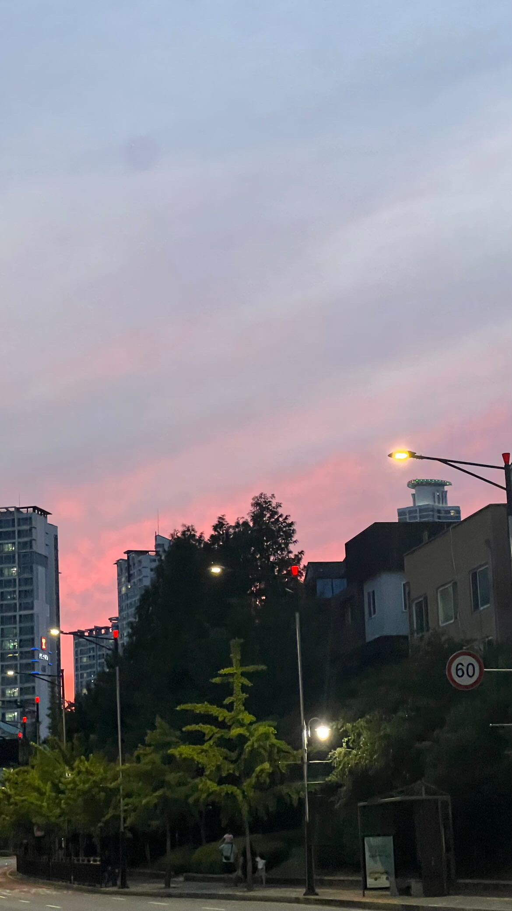
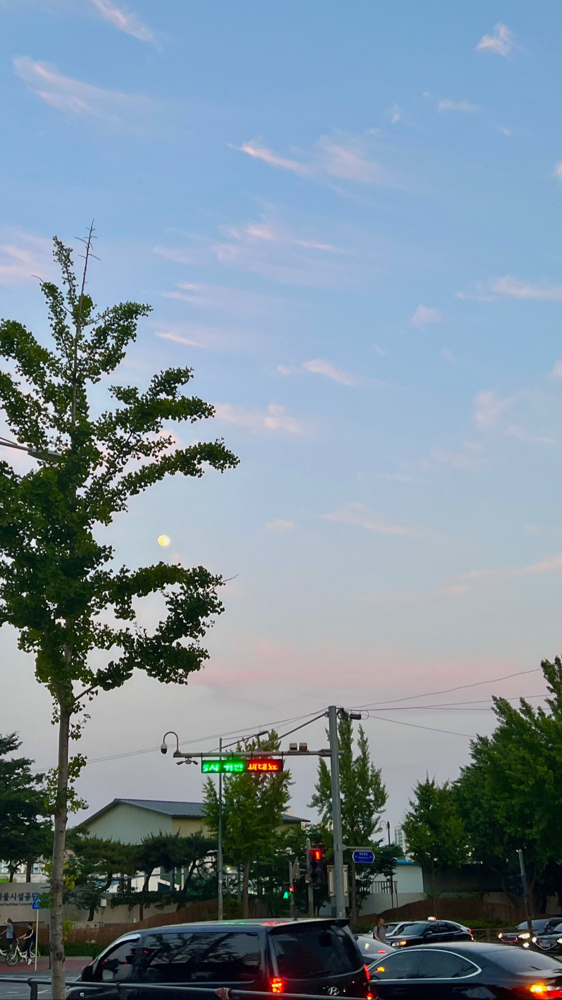

Selfie




학교 통학 시에 노래를 듣는다. 좋아하는 아티스트가 있으면 그
아티스트의 전곡을 듣는 편인데 요즘은 서동현 노래를 듣고 있다.
다른
좋아하는 가수로는 기리보이, lauv가 있다.
lauv는 제일 좋아하는
팝가수이다. 좋아하는 노래로는 feelings, sims, better than this 등이
있다.
좋아하는 유튜버로는 셜론현준이 있다.
홍익대학교 건축학과
교수님이 운영하시는 유튜브 채널인데 주로 건축학도의 시선에서 보는
세상을 이야기해주신다. 관점이 새롭고 신기해서 계속 보게 된다.
한때 건축학도를 꿈꿨지만 입시 실패로 접게 되었다. 끝내 미련을
버리지 못 하고 종종 건축학도들의 유튜브를 찾아보곤 한다.
시간날 때마다 일상을 기록하는 것을 좋아한다. 처음 블로그를 시작할
때에는 그저 블로그 쓰는 게 유행이어서 시작했는데 쓰다보니 내 일상을
정리하고 추억하는 게 좋아져서 계속 쓰고 있다. 블로그를 쓰면 생각이
정리되기도 하고 좋았던 추억들을 되돌아 볼 수 있어서 좋다.
일상을 조금씩 모아서 한 달에 한 번 업로드한다.
서로이웃을
맺지 않으면 글을 볼 수 없다.
GLOW 모드를 사용 전 'star'버튼을 눌러 별을 만들어 주세요
GLOW 모드를 사용하려면 'glow'버튼을 눌러주세요